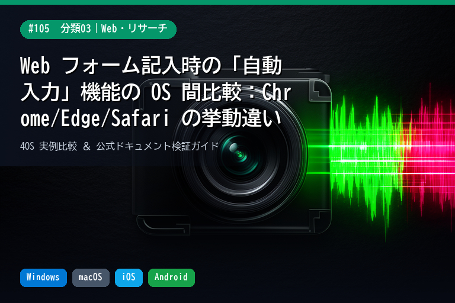

#105｜分類03: 情報収集・リサーチ・Web利用 2026-11-28

Web フォーム記入時の「自動入力」機能の OS 間比較：Chrome/Edge/Safari の挙動違いと偽サイト対策｜Windows・macOS・iOS・Android
Webサイトでログインする際や、会員登録フォームを埋める際、「以前入力した情報が自動で入る」便利さを誰もが求めています。しかし、この「自動入力（オートフィル）」機能は、利便性の裏側にフィッシング詐欺などのセキュリティリスクを常に孕んでいます。
特に、Windows、macOS、iOS、Androidといった異なるOSやブラウザを併用しているユーザーにとって、「どのデバイスで、どの設定を確認すれば安全に自動入力を管理できるのか」は非常に重要な課題です。
本記事では、主要4OSにおける標準機能の挙動の違いを徹底比較し、利便性を保ちつつ安全を守るための実践的な設定手順とトラブル解決策を解説します。
4OS比較早見表
| OS | 主要ブラウザ | 自動入力の実装基盤 | 同期・管理の仕組み | 特徴 |
|---|---|---|---|---|
| Windows | Chrome / Edge | ブラウザ内蔵マネージャー | Google / Microsoft アカウント | キーボードショートカット等で操作性が高い |
| macOS | Safari / Chrome | iCloudキーチェーン / ブラウザ内蔵 | iCloud / 各社アカウント | OS標準の「キーチェーン」と密接に連携 |
| iOS | Safari / Chrome | iCloudキーチェーン / ブラウザ内蔵 | iCloud / Google アカウント | 画面下部へのポップアップ通知が特徴 |
| Android | Chrome / Samsung Internet | Googleパスワードマネージャー | Google アカウント | キーボード入力時の予測提案と連動 |
1. Windows 11 での実例手順（Chrome / Edge）
Windows環境では、ブラウザ独自のパスワードマネージャーが中心となります。OS標準の独立したパスワード管理アプリは存在しないため、ブラウザの設定を正しく把握することが重要です。
設定と操作
- Google Chrome: 「設定」＞「プライバシーとセキュリティ」＞「パスワードマネージャー」から管理します。
- Microsoft Edge: 「設定」＞「プロファイル」＞「パスワード」からアクセス可能です。Microsoftアカウントとの連携により、PC間での同期が行われます。
挙動の特徴
- ショートカット: Chromeでは
Ctrl+Shift+Lを押すことで、保存されたフォーム情報を素早く呼び出せる場合があります（※ブラウザのバージョンや設定に依存）。 - 個別の無効化: 特定のサイトだけで自動入力を止めたい場合は、パスワードマネージャー内の各サイト設定から「自動入力」をオフにします。
2. macOS での実例手順（Safari / Chrome）
macOSでは、Apple独自の「キーチェーン」とブラウザ機能の使い分けに注意が必要です。
設定と操作
- Safari: 「設定」＞「パスワード」から管理します。ここで入力した情報はiCloudキーチェーンを通じてiPhone/iPadとも同期されます。
- Google Chrome: Windowsと同様、ブラウザ内蔵のマネージャーを使用します。
挙動の特徴
- 注意点: Safariで保存した情報はChromeには自動で反映されません（逆も同様）。OSレベルの「設定」＞「プライバシーとセキュリティ」の中に独立した自動入力管理項目はなく、あくまでブラウザアプリごとの設定として管理する必要があります。
3. iOS（iPhone / iPad）での実例手順
iOSでは、Safariの標準機能が非常に強力に統合されています。
設定と操作
- Safari: 「設定」＞「パスワード」から、保存されたすべての情報（クレジットカード含む）を確認・編集できます（iOS 16.2以降）。
- Chrome: Googleアカウントによる同期のみとなります。
挙動の特徴
- UIの挙動: Webページでフォームをタップすると、画面下部やURLバー付近に「自動入力」の提案がポップアップとして表示されます。
- 制限事項: サードパーティ製ブラウザ（Chrome等）の自動入力はOSレベルでは制御できないため、iOSでの一貫した体験を求めるならSafariの利用が推奨されます。
4. Android での実例手順（Chrome / Samsung Internet）
Androidは機種やメーカーによって挙動が分かれることが多いため、注意が必要です。
設定と操作
- Google Chrome: 「設定」＞「パスワードマネージャー」から管理します。
- Samsung Galaxy (Samsung Internet): ブラウザ内の「設定」＞「パスワード管理」からアクセスします。
- OS標準連携: Android 12以降では、OSレベルのパスワードマネージャーとの連携も可能ですが、機種により名称が異なるためブラウザ個別の設定を確認するのが確実です。
挙動の特徴
- キーボード連動: キーボードを表示した際に、保存された情報が予測候補として提示されます。オフにする場合は各ブラウザの設定から変更する必要があります。
よくあるトラブルと解決チェックリスト
自動入力がうまくいかない、あるいはセキュリティに不安を感じた際のチェックリストです。
トラブル A: 「自動入力」が反応しない・表示されない
- 原因: ブラウザキャッシュの不整合、パスワード保存設定のオフ、またはサイト側がHTTPS非対応（セキュリティ上の理由でブロック）。
- 解決策:
- ブラウザの設定から「すべてのパスワードを管理」を開き、自動入力がONか確認。
- キャッシュとCookieをクリアしてブラウザを再起動。
- OS別補足: WindowsではSnipping Toolでエラー画面をキャプチャし、問題箇所を特定するのが効率的です。macOSでは「キーチェーンアクセス」アプリを開き、そもそもデータが存在するか確認してください。
トラブル B: 偽サイト（フィッシング）での情報漏洩への対策
- 原因: URLが偽装されたサイトで無意識に自動入力が作動し、認証情報が送信される。
- 解決策:
- 入力前に必ずアドレスバーの「鍵アイコン」とドメイン名を視認する。
- Safari等の設定で「信頼できないサイトでの自動入力を無効化」するオプションがある場合は活用する。
- 重要: Chrome等のブラウザでは、拡張機能なしでは高度な制御が難しいため、「怪しいサイトでは手動入力する」という習慣を徹底してください。
トラブル C: パスワード情報の同期エラー・重複表示
- 原因: クラウドアカウント（Google/Microsoft/iCloud）の同期遅延や、複数デバイスでの設定不一致。
- 解決策:
- 各アカウントの「パスワード管理ツール」にログインし、手動で再同期を促す。
- ブラウザを完全に終了させてから再起動する。
トラブル D: 操作手順を正確に記録・共有したい場合（技術者向け）
- 目的: 設定変更やトラブルの過程をマニュアル化するために記録を残す。
- OS別推奨ツール:
- Windows: 「Snipping Tool」でスクリーンショットを取得し、Xbox Game Barで操作動画を記録。
- macOS:
Shift + Command + 5で画面収録を開始。 - iOS: コントロールセンターから「画面収録」を選択。
まとめ：快適なマルチOS環境を作るポイント
Webフォームの自動入力は強力な味方ですが、安全に使いこなすには「どのプラットフォームで何が起きているか」を把握することが第一歩です。
快適かつ安全なデジタルライフを送るためには、以下の周辺機器やツールの導入も検討してみることをお勧めします。
- VPNサービス: 公共Wi-Fi等でフォーム入力を行う際、通信を暗号化して盗聴を防ぎます。
- トラックボールマウス: Windows/macOS問わず、精密な操作が可能で手首の負担を軽減し、長時間のブラウジング作業を快適にします。
- ブルーライトカット眼鏡: 画面上の細かい文字（ドメイン名の確認など）を長時間注視する際の目の疲れを抑え、集中力を維持します。
各OSの特性を理解し、適切な設定とツールを組み合わせることで、利便性とセキュリティを両立した理想的なマルチOS環境を実現しましょう。
参考文献・公式ドキュメント（一次情報ソース）
本記事の手順・仕様は以下の各OSおよびツールの公式ドキュメントに基づいています。OSアップデートによりメニュー名称や挙動が変わる場合があるため、最新仕様の確認にもご活用ください。
- [Windows] Snipping Tool を使ってスクリーンショットをキャプチャする・画面録画する - Microsoft サポート
- [macOS] Macでスクリーンショットを撮る - Apple サポート (日本)
- [macOS] Macで画面を収録する方法 - Apple サポート (日本)
- [iOS] iPhoneでスクリーンショットを撮る（フルページ保存を含む） - Apple サポート (日本)
- [iOS] iPhone、iPad、iPod touchで画面を録画する - Apple サポート (日本)
- [Android] Android デバイスで画面の画像（スクリーンショット）または動画を撮影する - Android ヘルプ